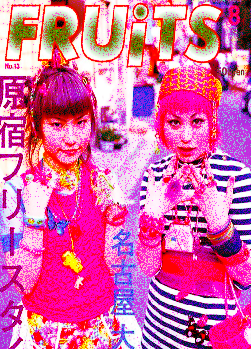
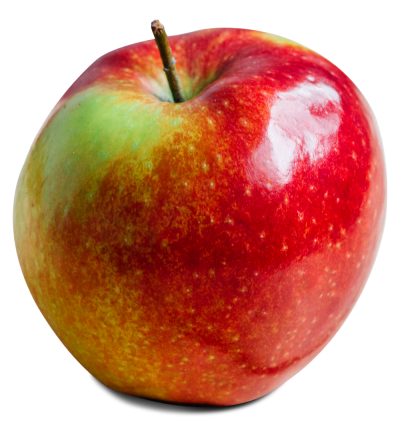
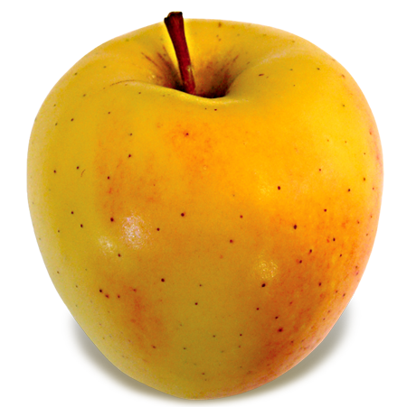
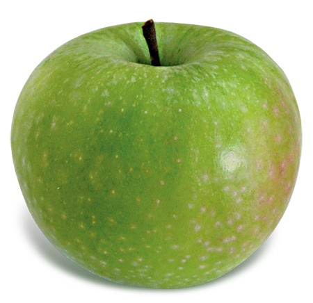

Fruits (stylized as FRUiTS) was a Japanese monthly street fashion magazine founded in 1997 by photographer Shoichi Aoki. Though Fruits covered styles found throughout Tokyo, it is associated most closely with the fashion subcultures found in Tokyo's Harajuku district. The magazine primarily focused on individual styles found outside the fashion-industry mainstream, as well as subcultures specific to Japan, such as lolita and ganguro, and local interpretations of larger subcultures like punk and goth. Fruits featured a simple layout, with the bulk of the magazine made up of single full-page photographs accompanied by a brief profile of the photographed person, which included their age, occupation, and a description of what brands they were wearing (if applicable), as well as their self-described "point of fashion" (style inspiration). Most issues included only a couple of advertisements, and typically only for local businesses. Occasional special-edition issues of Fruits also included more extensive profiles of frequently photographed people, or reader-created artwork. After nearly 20 years and 233 issues, Aoki announced in February 2017 that Fruits magazine would cease publication effective immediately because "there are no more cool kids to photograph".



